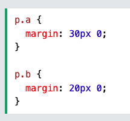
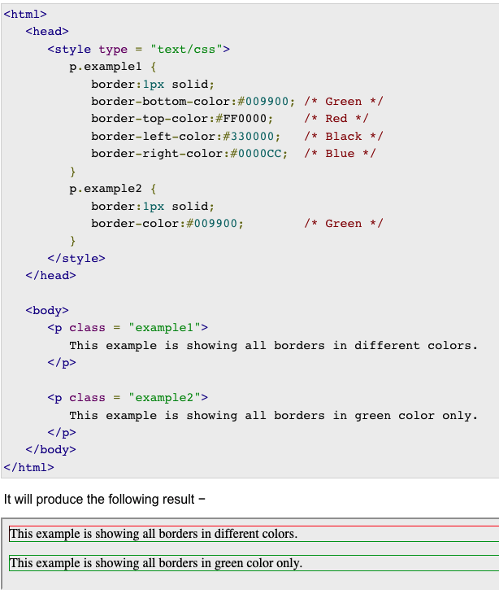
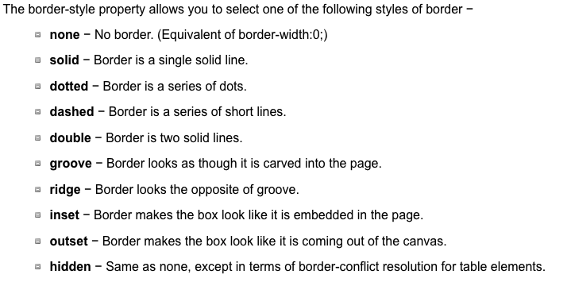
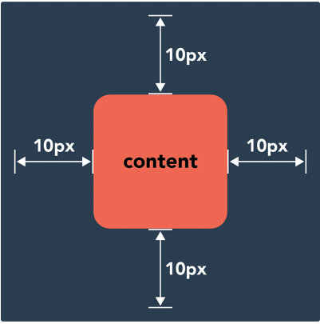
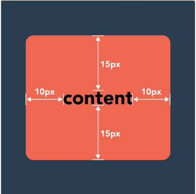

Technical Blog
So what is the difference between Margin, Border and Padding?
As part of my web development course this blog post involves researching the topic in hand and explaining to you, my audience, the difference between Margin, Border and Padding.
Using Cascading Style Sheets (CSS) handles the look and feel of a web page. Using CSS allows you to control several elements so you can create a stunning website. I will be comparing the CSS concepts of margin, border and padding and outlining the similarities and differences of these. The blog will also aim to explain how and when you will use these CSS concepts. So let’s dive right in with some definitions and information about each element:
Margin
The CSS margin properties are used to create space around elements, outside of any defined border. With CSS you have the ability to individually set the margin for each side of an element, that is the top, right, bottom and left. An example of some CSS code used to set the margin for all four sides of a p element to 40 pixels:
p { margin: 40px; }
Where p stand for paragraph which has a margin set at 40px this is around 10.6 mm. Incidentally, there are plenty of unit converters online if you need to look the conversion up. As mentioned earlier, the margin property sets the margins for an element, and you can use the following code commands to alter the margins;
- Margin-top
- Margin-right
- Margin-bottom
- Margin-left
Often the margin property has four values, these can also be shown in shorthand as follows:
Margin: 10px 5px 15px 20px
This means:
- top-margin is 10px
- right-margin is 5px
- bottom-margin is 15px
- left-margin is 20px
However, the margin property can have fewer values and negative values are also allowed.
All the margin properties can have the following values:
- Margin: length/auto/initial/inherit;
- Auto - the browser calculates the margin
- Length - specifies a margin in px, pt, cm etc.
- % - specifies a margin in % of the width of the containing element
- Inherit - specifies that the margin should be inherited from the parent element.
The following image demonstrate different ways of writing CSS using shorter methods:
Margin collapse
Top and bottom margin elements are sometimes collapsed to a single margin that is equal to the largest of the two margins. This does not happen to horizontal (left and right) margins. Only vertical (top and bottom) margins.
The following is an interesting tutorial on margins
Margins TutorialBorders
The CSS border property defines the width, line style, and colour of the border of a box. It is a shorthand property for setting the border-width, border-style, and border-color CSS properties. You can individually change the colour of the bottom, left, top and right sides of an element’s border using the properties -
The following image shows the effect of all these properties -
Border styles
The border-width property allows you to set the width of an element borders. The value of this property could be either a length in px, pt or cm or it should be set to thin, medium or thick. You can also individually change the width of the bottom, top, left and right borders of an element. Border properties also use shorthand, for example;
The following is an interesting tutorial on borders
Borders TutorialPadding
CSS padding determines how content looks within its respective element. The CSS padding property creates a space between an element’s borders and content contained inside that element. When you increase the padding value, the content will stay the same size, but you will add more space around the content. This is useful forinetractive elements, like buttons, when you want to expand the clickable area. Similar to the CSS for margins the CSS code is padding and there are properties for setting the padding for each side of an element (top, right, bottom, left).
The following is an interesting tutorial on padding
Padding TutorialNote: negative values are not allowed (unlike margin values which can be negative).
Like margins, it is possible to shorten the code
When the shorthand code has three values, two values and one value, it follows the same rule as with margins.
The differences
Margin and padding do similar things in CSS. However, there is an important fundamental difference in their usage. Understanding the difference between margins and padding will allow you to make better design decisions for your website. In CSS, a margin is the space around an element's border, while padding is the space between an element’s border an element’s content. Looking at this from a different angle, the margin property controls the space outside the element and the padding element controls the space inside the element. Let’s go back to look at a picture of margins:
This means there will be at least 10 pixels of space between this element and adjacent page elements - the margin “pushes away” its neighbours. On the other hand padding is located inside the border of an element. The element below has padding of 10px on the left and right sides, and padding of 15px on the top and bottom sides:
To create the gap, the padding either grows the element’s size or shrinks the content inside. You would usually use margins when you are adjusting the space of an element in relation to another element (i.e a div in relation to another div on the page), and padding when you’re adjusting the look of an individual element (i.e the amount of pixels between the edge of a div and the text within it). When you are adjusting your design layout, you will need to decide whether to change the margins or the padding to achieve the desired visual effect.
To recap and finish off:
Margin is how much space is around an object.
Padding is how much space is within an object sides and it’s contents.
Border is between the margin and padding of an object. Only counted when given an actual width otherwise, it’s zero.
Thanks for reading :)